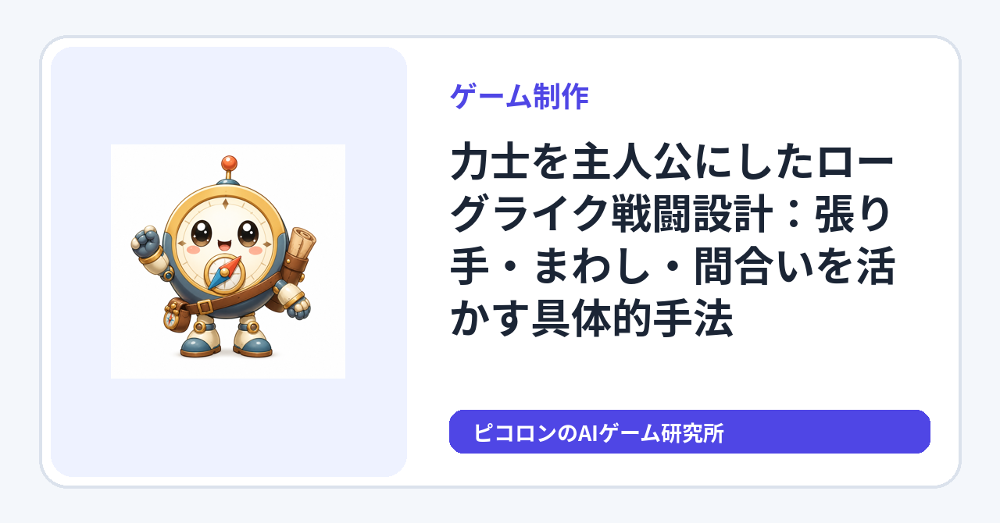

ゲーム制作
力士を主人公にしたローグライク戦闘設計：張り手・まわし・間合いを活かす具体的手法
力士の特徴である張り手やまわし、間合いを戦闘システムに落とし込み、初心者でも試せるローグライクゲームの設計方法を具体例と失敗例を交えて解説します。ランごとのランダム強化や敗北後の再挑戦といったローグライク固有の要素も取り入れ、張り手・まわし・間合いの組み合わせによるビルド選択の具体例も紹介します。

はじめに
ゲーム制作でユニークな戦闘システムを作りたいなら、力士を主人公にしたローグライク戦闘設計は面白い挑戦です。この記事では、張り手、まわし、間合いといった力士の特徴をゲーム内にどう落とし込むか、さらにローグライクゲームならではのランごとのランダム強化や敗北後の再挑戦要素も含めて具体的な手順と工夫を紹介します。
1. 張り手の実装例
張り手は相手の動きを封じる技として使えます。ゲーム内では以下のように設計すると効果的です。
- 行動制限効果: 張り手を当てると敵の次のターンの行動がキャンセルまたは遅延する。
- 成功判定: プレイヤーの"張り手スキル"に加え、間合いの距離が近いほど成功率アップ。
具体的手順
- プレイヤーの攻撃コマンドに「張り手」を追加。
- 張り手が成功した場合、敵の行動を1ターン停止。
- 間合い管理で距離が遠いと成功率が下がる処理を入れる。
失敗例と改善
- 失敗例: 張り手成功率を固定にした結果、張り手連発が強すぎて単調に。
- 改善策: クールダウンや間合い依存の成功率を設定し、戦略性を増す。
2. まわしを使った防御と攻撃のバランス
まわしはゲーム内で防御や特定の攻撃のトリガーにできます。ゲームデザイン上、装備選択に意味を持たせるためのゲーム独自ルールとして、まわしの耐久度を設定し、戦闘に影響を与える仕組みを作ると良いでしょう。
- 防御ゲージ: まわしの耐久度を設定し、ダメージを一定量吸収。
- 反撃トリガー: まわしが一定以上のダメージを受けると、強力な反撃技が発動可能。
具体例
- まわし耐久度をHPとは別に設定。
- 攻撃を受けるたびにまわし耐久が減少。
- 耐久が一定以下になると「まわし返し」などの強力技を使えるように。
失敗例と改善
- 失敗例: まわし耐久が減るだけで戦闘に影響が薄く、存在感がない。
- 改善策: まわし耐久が減るとプレイヤーのステータスにデバフを付与し、緊張感を演出。
3. 間合いの重要性と実装方法
間合いは張り手の成功率や攻撃の命中率を左右する重要要素です。
- 距離管理: プレイヤーと敵の距離を数値化し、行動成功率やダメージに影響を与える。
- 動きの選択肢: プレイヤーは間合いを縮める、離すなどの選択肢を持つ。
具体的手順
- 戦闘フィールドに距離パラメータを持たせる。
- 各技の命中率や効果に距離依存の補正を加える。
- 移動コマンドで距離を調整可能にする。
失敗例と改善
- 失敗例: 間合いが単なる数値で意味が分かりにくい。
- 改善策: UIで距離感を視覚的に表現し、プレイヤーが直感的に理解できるようにする。
4. ローグライク固有の要素の導入
ローグライクゲームの特徴として、毎回のプレイでランダムに強化要素が変わるランごとのランダム強化や、敗北後に再挑戦できる仕組みを取り入れると、戦略の幅が広がります。
- ランダム強化: 各プレイ開始時に張り手の成功率アップやまわしの耐久増加、間合いの調整効果強化などのランダムな強化を付与。
- 敗北後の再挑戦: 敗北しても一部の強化やアイテムを引き継ぎ、次の挑戦に活かせるようにする。
5. 張り手・まわし・間合いを組み合わせたビルド選択の具体例
例えば、以下のようなビルドが考えられます。
- 張り手ビルド: 張り手成功率を高め、間合いを常に近く保ち、敵の行動を封じる戦法。
- まわしビルド: まわし耐久を重視し、防御と反撃を強化。耐久力を活かして長期戦に持ち込む。
- 間合いビルド: 間合いの調整を重視し、距離を保ちながら攻撃と防御のバランスを取る。
初心者向け簡単数値例
- 張り手成功率: 基本30% + 間合いが近い場合+20% = 50%
- まわし耐久度: 100ポイント
- 間合い距離: 1（近距離）～3（遠距離）で、1が張り手成功率最大
これらの数値を基に、張り手を積極的に使うか、まわしの耐久を温存するか、間合いを調整するかを選択できます。
バランス調整の考え方
- 張り手の成功率が強すぎる場合は、成功率を5〜10ポイント下げるか、クールダウンを設けて連発を防ぐ。
- 逆に弱すぎる場合は、クールダウンを1ターン短くするなどして使いやすく調整。
- まわしの耐久度や反撃トリガーも同様に、ゲームバランスを見ながら耐久値や発動条件を微調整する。
- 間合いの距離調整は、プレイヤーが戦略的に距離を操作できるようにし、効果の差が分かりやすい数値設定を心がける。
これらの調整は、プレイテストを重ねてゲームの面白さとバランスを最適化するための基本的な考え方です。
まとめ
力士の特徴をローグライク戦闘に落とし込むには、張り手の行動制限、まわしの防御・反撃、間合いの距離管理がキーポイントです。さらに、ランごとのランダム強化や敗北後の再挑戦要素を加えることで、戦略的で個性的なゲームシステムが構築できます。張り手・まわし・間合いの組み合わせによるビルド選択もゲームの深みを増す要素です。ぜひ小さな試作から始めて、失敗例も活かしながら調整してください。
実践ポイント
- 張り手成功率は距離依存にして単調さを避ける
- まわしはHP以外の耐久ゲージとして存在感を出す（装備選択に意味を持たせるためのゲーム独自ルールとして設定）
- 間合いはUIで見せてプレイヤーの理解を助ける
- ランダム強化や敗北後の再挑戦要素を取り入れ、ローグライクらしさを演出
- 張り手・まわし・間合いの組み合わせによるビルド選択で戦略性を拡張
- バランス調整は成功率やクールダウン、耐久度などの数値を微調整しながら行う
これらを踏まえ、ぜひあなたのゲーム制作に取り入れてみてください。
当サイトにはアフィリエイトリンクが含まれる場合があります。
制作の続きや検証結果も順次公開します。